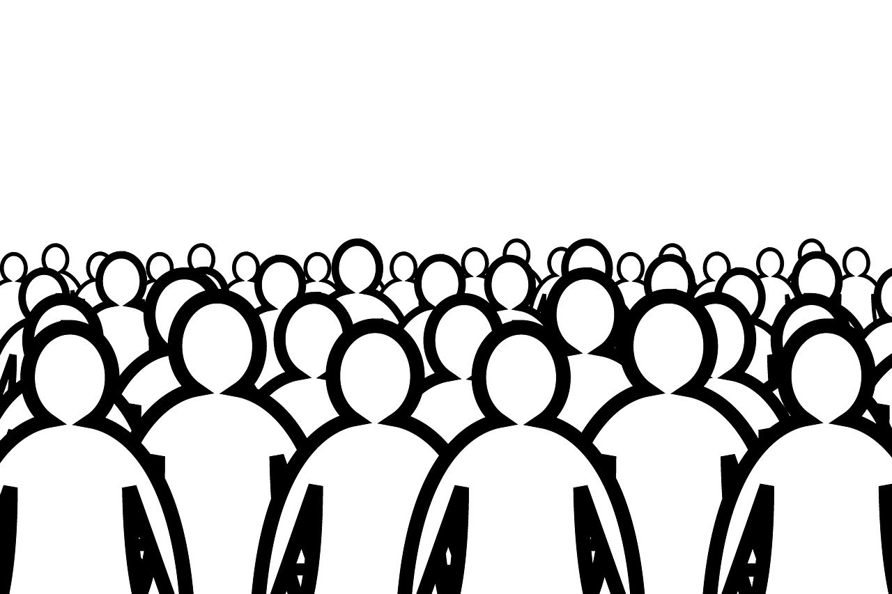

Recentes:
Afeição

O artigo aborda o gatilho da afeição, explicando seu funcionamento e algumas aplicações utilizadas na comunicação.
Aprovação social
O artigo aborda o gatilho da aprovação social, o efeito espectador e como aplicar na prática os assuntos abordados.
Reciprocidade

O artigo aborda o gatilho da reciprocidade, seu papel na criação de conexão com o leitor e como utiliza-lo no copywriting.
Recomendado da semana:
Afeição
O artigo de destaque da semana fala sobre o gatilho da afeição, sua relação com a marca Starbucks, a importância de deixar um cliente satisfeito e como aplicar o conteúdo na prática.